Apresentação do projeto
Portal Família
Àṣẹ Omos Odé
Site público e área restrita para os filhos e a administração do Centro Cultural Família Àṣẹ Omos Odé — fé, axé e tradição desde 1980.
Visão geral
Funciona no computador e no celular e pode ser instalado na tela inicial como um aplicativo, sem passar pela loja de apps.
História da casa, calendário de toques, fotos e vídeos das festas, jogo de búzios pelo WhatsApp e localização.
Cada filho acompanha a sua vida na casa; a administração e os coordenadores organizam tudo num só lugar.
| Antes | Com o portal |
|---|---|
| Escala de limpeza em planilha e grupo de mensagens | Rodízio quinzenal por grupo; cada filho escolhe o seu dia; meta de 5 limpezas por ano acompanhada |
| Comprovantes de mensalidade e festa espalhados no WhatsApp | O filho envia o comprovante no portal; a administração confirma com um toque; o arquivo é apagado depois |
| Toques, funções e obrigações avisados de boca | Calendário mensal com cada compromisso no seu dia, cores por tipo e detalhes ao tocar |
| Conta da festa feita no papel, valor de cada filho calculado à mão | Arrecadação: lista de compras, total e divisão automática pelos filhos ativos |
| Cada um sem saber direito a sua função na festa | Equipes com coordenador e tarefas por festa, com o andamento de cada uma |
| Cantigas, rezas e regras passadas só de boca | Espaço de aprendizado publicado pelos pais de santo, ogãs e ebomis |
| Caixa da casa em caderno; fichas dos filhos em papel | Controle financeiro (entradas, saídas, saldo) e cadastro completo, sempre à mão |
Site público
Visual escuro, moderno e tecnológico, com brilho dourado e animações suaves. O destaque do topo mostra o próximo toque e quantos dias faltam.
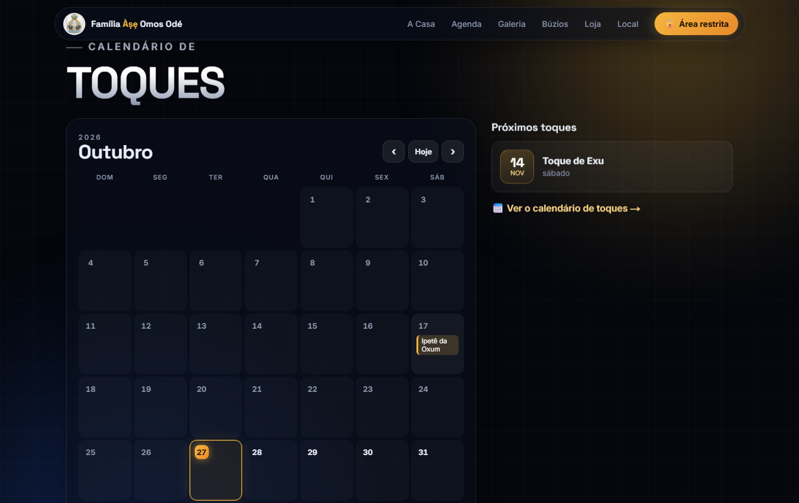
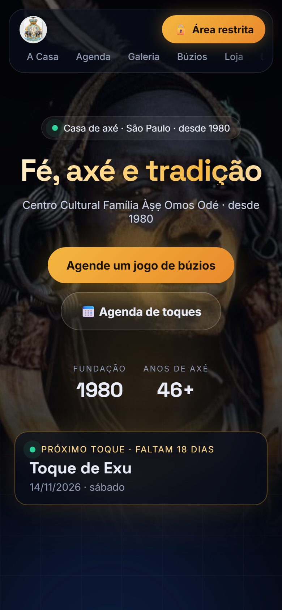
Calendário
O mês inteiro em grade, com cada compromisso dentro do seu dia. Cores separam os tipos; tocar num dia abre os detalhes (horário, referência, responsáveis). Os botões da legenda ligam e desligam cada tipo.
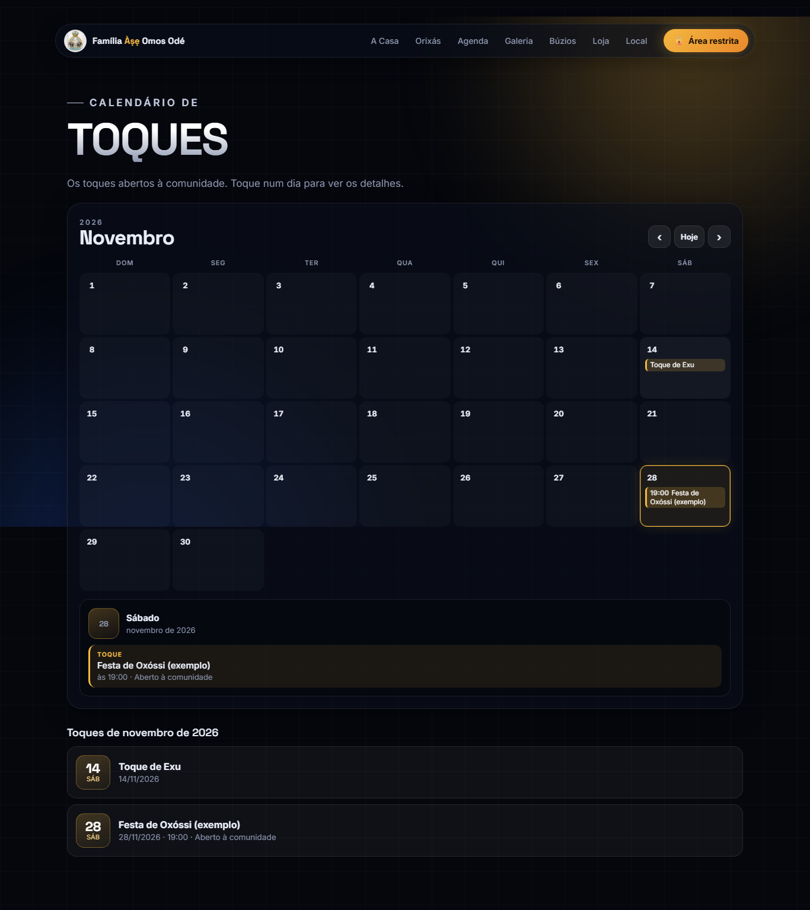
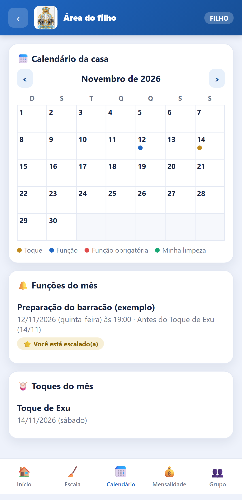

| Cor | Tipo |
|---|---|
| 🟡 | Toque — os públicos aparecem também no site |
| 🔵 | Função — com responsáveis |
| 🔴 | Obrigação — presença obrigatória (todo “Oro” já entra assim) |
| 🟢 | Minha limpeza — só o próprio filho vê |
Toques, funções e obrigações são cadastrados pela administração, com data, hora e referência. O filho vê o calendário da casa com os seus próprios compromissos destacados.
Área do filho

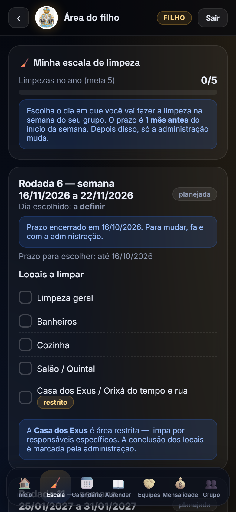
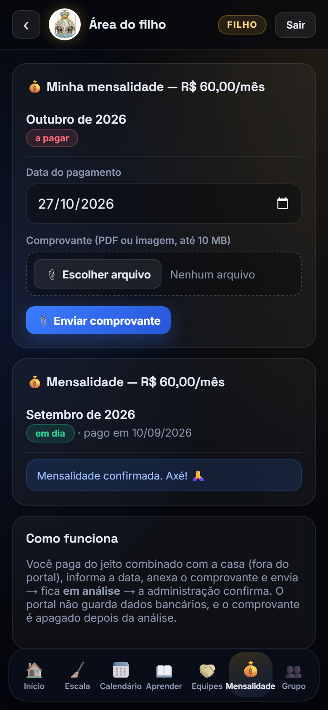
O filho vê: funções e obrigações (com aviso de presença obrigatória e se está escalado), as semanas do seu grupo, mensalidade e festas, toques, aniversariantes, colegas do grupo (só nomes), a sua equipe e os seus dados.
Os dados pessoais são somente leitura para o filho; correções são feitas pela administração. O botão Sair fica no topo de todas as telas.
Novidades
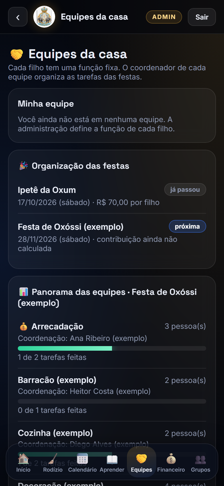
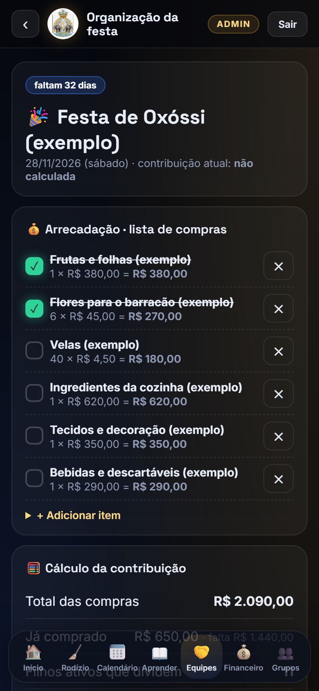
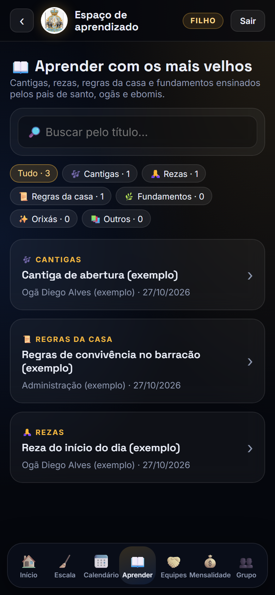
Cada filho tem uma função fixa na casa. Cada equipe tem um coordenador, que cria as tarefas de cada festa. O panorama mostra o andamento de todas as equipes.
O coordenador monta a lista de compras. O portal soma e divide pelos filhos ativos, sempre para cima. Um toque cria a cobrança de cada filho.
Cantigas, rezas, regras da casa e fundamentos. Pais/mães de santo, ogãs e ebomis publicam; todos os filhos estudam. Busca e categorias.
Administração

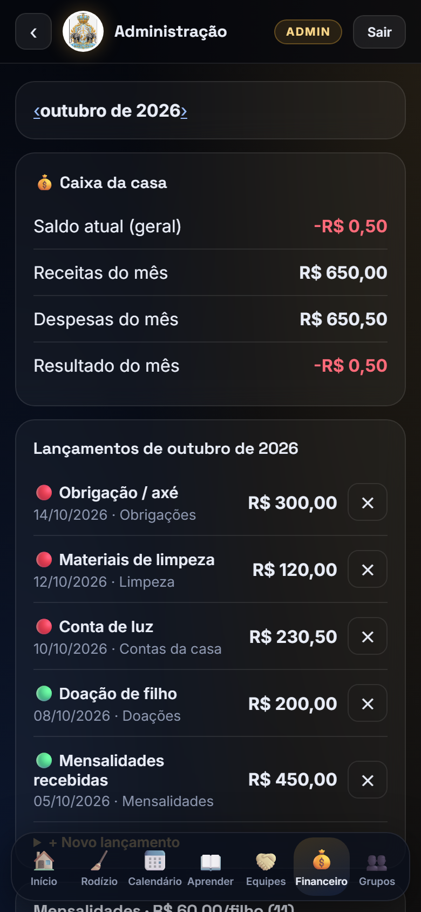
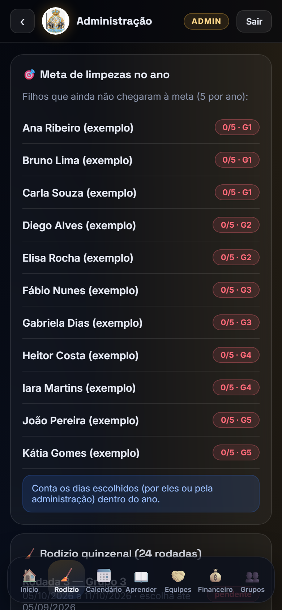
Confiança
| O quê | Como |
|---|---|
| Desenvolvimento seguro (DevSecOps) | A cada mudança, uma esteira automática procura senhas vazadas, falhas no código, bibliotecas vulneráveis e problemas na imagem, roda os testes e faz um teste de invasão básico (OWASP ZAP). Falha alta ou crítica bloqueia a publicação. |
| Testes automáticos | 24 testes unitários, 37 verificações de permissão no banco e testes de ponta a ponta no navegador (filho e administrador). |
| Monitoramento | Painel com site no ar, banco, tempo de resposta e alertas automáticos. |
| Rotinas automáticas | Mensalidades do mês e limpeza dos comprovantes, sem ninguém precisar lembrar. |
Próximos passos
| Etapa | Quem |
|---|---|
| Revisar telas e textos (história da casa, fotos, vídeos) | Casa |
| Cadastrar os filhos (e-mail de cada um), os grupos e as equipes com seus coordenadores | Administração da casa |
| Definir quem tem cargo de ensino (pai/mãe de santo, ogã, ebomi) para publicar no espaço de aprendizado | Administração da casa |
| Decidir o endereço do site (domínio) e a hospedagem | Casa + equipe técnica |
Ligar o “Entrar com Google” (passo a passo em GUIA-LOGIN-GOOGLE.md) | Equipe técnica |
| Revisão de segurança e LGPD antes dos dados reais; publicação | Equipe técnica |
| Aviso aos filhos pelo WhatsApp com o link e as instruções de primeiro acesso | Casa |
.com.br, anual) e hospedagem do portal. Os valores mudam — consultar na hora da contratação.